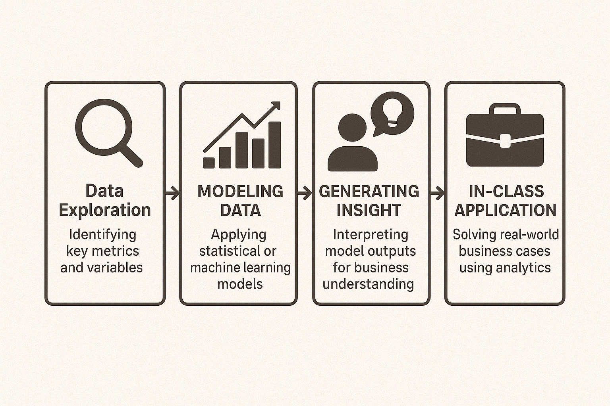

Business Insights from Analytics - Case Study Series
This project series showcases my ability to apply business analytics principles across multiple case studies. Through real-world data understanding, model building, and deriving insights, I demonstrated the foundation skills essential for transforming data into business value.
Each case study followed a structured approach divided into four blocks:
- Case 1: Customer Segmentation
- Conducted Exploratory Data Analysis (EDA) to identify key variables like customer purchase frequency, monetary value, and demographics.
- Applied K-Means Clustering to segment customers based on behavioral patterns.
- Used Principal Component Analysis (PCA) to reduce dimensionality and visualize customer groups.
- Business Recommendation: Target high-value customer clusters for retention campaigns and design differentiated marketing strategies.
- Case 2: Churn Prediction
- Built a Logistic Regression model to predict customer churn likelihood based on transaction history and engagement metrics.
- Assessed model performance using Confusion Matrix, Accuracy, Precision, and Recall.
- Performed Feature Selection to identify most influential predictors.
- Business Recommendation: Focus retention efforts on high-risk customer profiles detected by the model.
- Case 3: Pricing Strategy Optimization
- Utilized Linear Regression and Elasticity Modeling to examine the relationship between price changes and product demand.
- Identified Price Sensitivity Coefficients for various product categories.
- Conducted Scenario Analysis to forecast revenue impacts under different pricing strategies.
- Business Recommendation: Implement dynamic pricing policies to maximize revenue while balancing customer price tolerance.
- Case 4: Operational Efficiency and Forecasting
- Applied Time Series Analysis and Seasonal Decomposition to detect patterns in sales and operational KPIs.
- Developed Forecasting Models (e.g., Simple Moving Averages, Exponential Smoothing) to predict future performance.
- Identified Bottlenecks and Cycle Time Variations using statistical control charts.
- Business Recommendation: Streamline operational processes during peak load periods and optimize resource allocation.
Across four case studies, I tackled problems involving customer segmentation, churn prediction, pricing optimization, and operational efficiency. I primarily used R, SQL, and Tableau to develop solutions.
- Data Cleaning and Preparation
- Exploratory Data Analysis (EDA)
- Predictive Modeling (Linear Regression, Decision Trees, Clustering)
- Business Problem Framing and Interpretation
- Statistical Thinking and Hypothesis Testing
- Data Visualization and Communication of Findings
- Critical Thinking and Business Strategy Alignment
This series solidified my ability to move beyond technical execution into business problem solving with analytics. It taught me that understanding the 'why' behind the data and communicating insights clearly are as important as modeling itself. These case studies laid the groundwork for my future success in business analytics and data-driven decision-making.